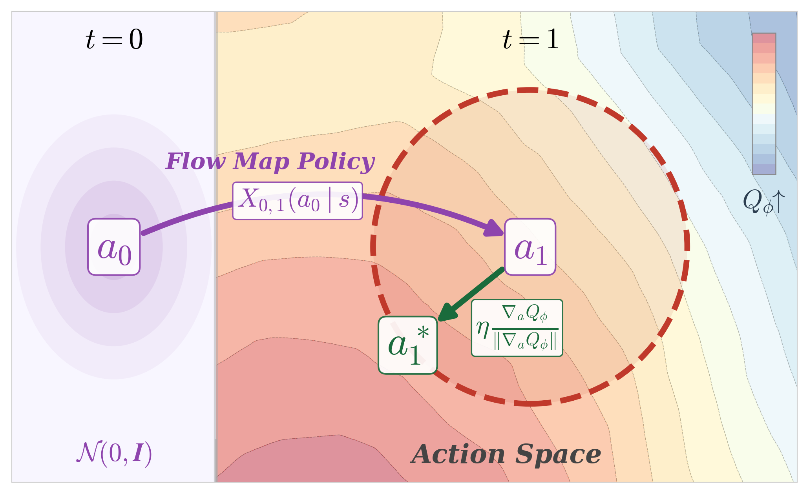
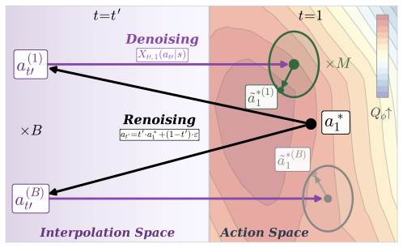
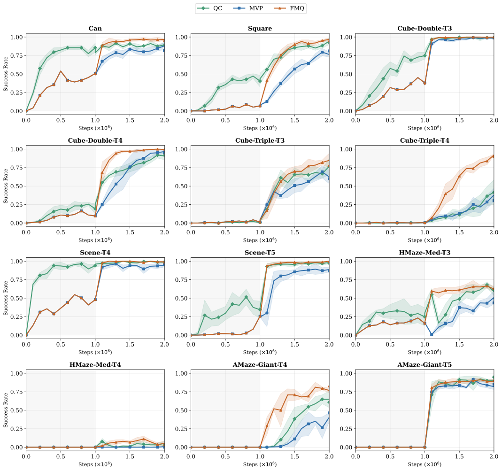
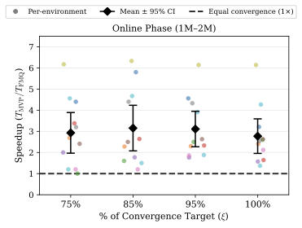

Generative policies based on expressive model classes, such as diffusion and flow matching, are well-suited to complex control problems with highly multimodal action distributions. Their expressivity, however, comes at a significant inference cost: generating each action typically requires simulating many steps of the generative process, compounding latency across sequential decision-making rollouts. We introduce flow map policies, a novel class of generative policies designed for fast action generation by learning to take arbitrary-size jumps—including one-step jumps—across the generative dynamics of existing flow-based policies. We instantiate flow map policies for offline-to-online reinforcement learning (RL) and formulate online adaptation as a trust-region optimization problem that improves the critic's Q-value while remaining close to the offline policy. We theoretically derive Flow Map Q-Guidance (FMQ), a principled closed-form learning target that is optimal for adapting offline flow map policies under a critic-guided trust-region constraint. We further introduce Q-Guided Beam Search (QGBS), a stochastic flow-map sampler that combines renoising with beam search to enable iterative inference-time refinement. Across 12 challenging robotic manipulation and locomotion tasks from OGBench and RoboMimic, FMQ achieves state-of-the-art performance in offline-to-online RL, outperforming the previous one-step policy MVP by a relative improvement of 21.3% on the average success rate.


Figure 1. (Left) FMQ: one-step flow map policy transports noise \(a_0\) to action \(a_1\); then, trust-region projection displaces action \(a_1\) to \(a_1^*\) that maximizes \(Q\)-value. (Right) QGBS (\(M{=}1, B{=}2\)): renoising corrupts \(a_1^*\) into \(B\) intermediate states \(a_{t'}\), which the flow map policy then denoises to generate \(B\) candidate actions; candidates are updated via the optimal trust-region displacement to maximize \(Q_\phi\), and the highest-valued \(M\) actions are selected.
We introduce flow map policies, a novel class of generative policies that learn the unique two-time jump operator [1] associated with the probability flow ODE of diffusion and flow-matching policies.
Let \(X_{r,t}: [0,1]^2 \times \mathcal{S} \times \mathbb{R}^d \to \mathbb{R}^d\) be a flow map that evolves the action dynamics between any \((r,t) \in [0,1]\), conditioned on the MDP state \(s \in \mathcal{S}\) and satisfying the jump condition \(X_{r,t}(a_r|s) = a_t\). The flow-map policy is then the distribution induced by this map evaluated at time \(t=1\):
\[ \pi(a \mid s) = [X_{r,1}]_{\#}\, p_r(a_r \mid s) \]For principled online adaptation of one-step flow map policies, we formulate a trust-region optimization problem and derive an analytically optimal, closed-form method that aligns the action distribution with \(Q\)-value guidance.
Consider a flow map policy \(\pi^{\text{ref}}(\cdot|s)\) with underlying flow map \(X^{\text{ref}}_{r,1}\), generating actions \(a_1 = a_r + (1-r)\,u^{\text{ref}}_{r,1}(a_r \mid s)\). The optimal average velocity \(u^*_{r,1}\) that maximizes the first-order expansion of \(Q_\phi\) around \(a_1\), subject to trust-region constraint \(\|u_{r,1} - u^{\text{ref}}_{r,1}\|_2 \le \eta\), is:
\[ u^*_{r,1}(a_r \mid s) = u^{\text{ref}}_{r,1}(a_r \mid s) + \eta\, \frac{\nabla_a Q_\phi(s, a_1)}{\|\nabla_a Q_\phi(s, a_1)\|_2} \]We additionally introduce Q-Guided Beam Search (QGBS), a complementary inference-time refinement procedure that iteratively improves actions via two steps:
Success rate (mean ± std over 5 seeds, 50 episodes). IQM with 95% CIs.
| Environment | QC [2] | MVP [3] | MVP + QGBS (Ours) | FMQ (Ours) | FMQ + QGBS (Ours) |
|---|---|---|---|---|---|
| can | 0.88 ± 0.06 | 0.83 ± 0.07 | 0.87 ± 0.07 | 0.96 ± 0.04 | 0.97 ± 0.03 |
| square | 0.89 ± 0.04 | 0.82 ± 0.04 | 0.83 ± 0.05 | 0.94 ± 0.02 | 0.95 ± 0.04 |
| cube-dbl-t3 | 1.00 ± 0.00 | 1.00 ± 0.00 | 1.00 ± 0.00 | 1.00 ± 0.00 | 1.00 ± 0.00 |
| cube-dbl-t4 | 0.92 ± 0.05 | 0.98 ± 0.02 | 0.98 ± 0.02 | 0.98 ± 0.02 | 1.00 ± 0.00 |
| cube-trl-t3 | 0.83 ± 0.08 | 0.64 ± 0.12 | 0.78 ± 0.12 | 0.78 ± 0.10 | 0.84 ± 0.04 |
| cube-trl-t4 | 0.37 ± 0.26 | 0.32 ± 0.07 | 0.37 ± 0.09 | 0.88 ± 0.07 | 0.87 ± 0.05 |
| scene-t4 | 0.99 ± 0.01 | 0.92 ± 0.02 | 0.98 ± 0.02 | 1.00 ± 0.00 | 0.99 ± 0.01 |
| scene-t5 | 0.96 ± 0.02 | 0.90 ± 0.06 | 0.95 ± 0.05 | 0.98 ± 0.02 | 1.00 ± 0.00 |
| hmaze-med-t3 | 0.65 ± 0.11 | 0.47 ± 0.10 | 0.53 ± 0.03 | 0.69 ± 0.04 | 0.58 ± 0.07 |
| hmaze-med-t4 | 0.04 ± 0.03 | 0.00 ± 0.00 | 0.02 ± 0.02 | 0.06 ± 0.03 | 0.06 ± 0.03 |
| amaze-gnt-t4 | 0.64 ± 0.12 | 0.42 ± 0.06 | 0.43 ± 0.04 | 0.80 ± 0.06 | 0.77 ± 0.03 |
| amaze-gnt-t5 | 0.91 ± 0.05 | 0.82 ± 0.08 | 0.90 ± 0.06 | 0.92 ± 0.04 | 0.92 ± 0.05 |
| IQM [95% CI] | 0.86 [0.84, 0.87] | 0.75 [0.73, 0.77] | 0.81 [0.78, 0.83] | 0.91 [0.89, 0.93] | 0.93 [0.91, 0.94] |

FMQ reaches the highest success rate achievable by MVP 2.77× faster on average during the online phase, and up to 6.14× on humanoidmaze-medium-t3. The Q-gradient alignment provides a stronger learning signal than best-of-N selection, leading to faster policy improvement per environment step.

The computational cost of QGBS is NFE = M(1 + K·B) per action selection, where M is the number of initial candidates, K is the number of renoising steps, and B is the number of completions per candidate. Best-of-N sampling corresponds to K=0 and M=N. The optimal configuration (K=1, B=4, M=4) achieves a peak IQM of 0.93 with only 20 NFE—37.5% fewer than best-of-32—suggesting that diversifying candidates through renoising is more efficient than simply drawing more candidates. Increasing K beyond 1 does not improve performance, indicating that only a modest increase in inference cost is needed for optimal results.
| K | {B, M} | NFE | IQM |
|---|---|---|---|
| 0 | {1, 32} | 32 | 0.91 |
| 1 | {4, 4} | 20 | 0.93 |
| 1 | {2, 8} | 24 | 0.93 |
| 1 | {1, 16} | 32 | 0.92 |
| 2 | {4, 4} | 36 | 0.91 |
| 2 | {4, 16} | 144 | 0.90 |
Optimal: K=1, B=4, M=4 achieves peak IQM with only 20 NFE (37.5% fewer than best-of-32).
Visualizations of FMQ policy rollouts across all 12 evaluation environments.
@article{ziakas2026fmq,
title={Aligning Flow Map Policies with Optimal Q-Guidance},
author={Ziakas, Christos and Russo, Alessandra and Bose, Avishek Joey},
journal={arXiv preprint arXiv:2605.12416},
year={2026}
}